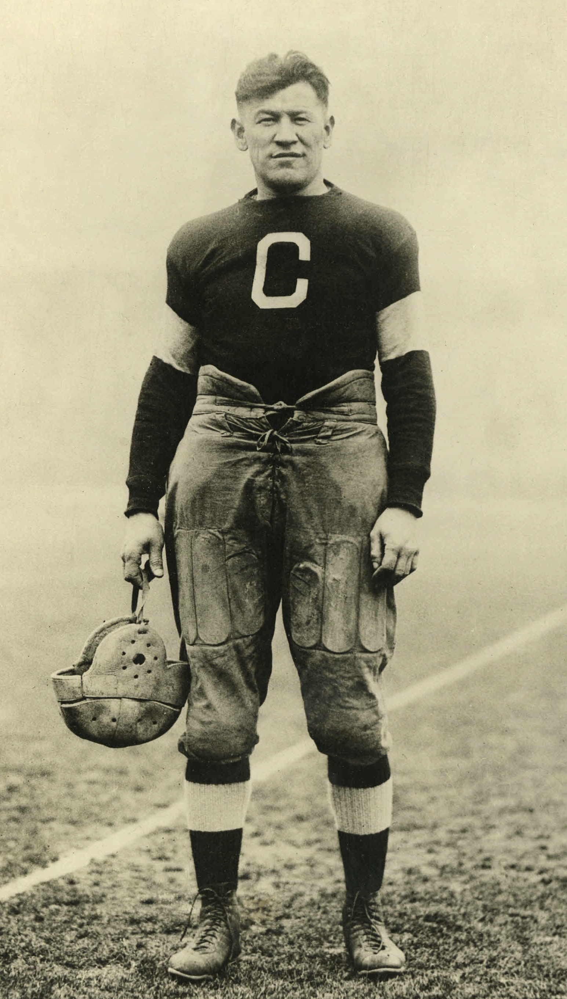
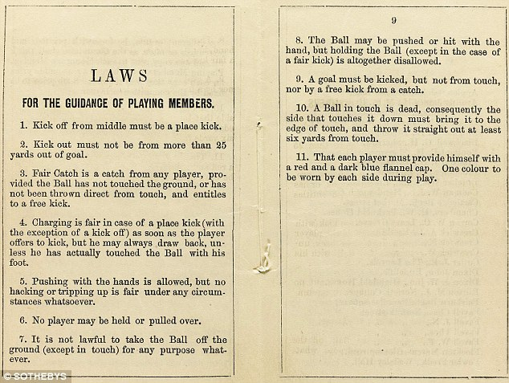

 Jim Thorpe, founder of the NFL in 1920 He was selected into the Hall of Fame 1963. He won a gold medal at the 1912 olympics. Jim was the head coach of the Bulldogs. In 1950, he was voted as the greatest athlete of the 20th century, an Associated Press poll. Some sports that Jim Thorpe did was football, baseball, track and lacrosse, and also competed in hockey, handball, tennis, boxing and ballroom dancing. Thorpe played outfield for the National League teams of Cincinnati Ohio, Boston, and New York from 1913 to 1919. From 1919 through 1926, he enjoyed greater success as one of the pioneers of American Professional football.
The first two teams to join the NFL were the Chicago Cardinals now known as the Arizona Cardinals and the Decatur Staleys now known as the Chicago Bears. In 1920 ten football teams gathered in Canton,Ohio to create the American Professional Football Association now known as the NFL. Later four more teams joined the League later that year rounding out the 14 original NFL Towns.
 Change in the Game(1920-39)by the 1920, the scoring rules had changed so that touchdowns were six points and field goals were three. Players in the 1920s and 1930s were wearing helmets and padding in their uniforms Helmets were made of leather with flaps that came down over the ears, and padding was hard leather. The next three decades were created in large part to make the game safer and more fan friendly in 1943 helemts became mandatoy.By 1955 most of the league was wearing face masks.In 1974 the goalposts were moved back from the goal line to the end line Wgere they've stayed ever since. Kickoffs move from the 40 to 35 yard line. A 1978 defenders player can only make contact with a receiver to the point of five yards beyond the line of scrimmage. In 1994 kickoffs were moved September 4, 1994 the tow point conversion in NFl history. In the 2010 playoffs the league installed a modified sudden-death overtime systme to help determin a winner in a tie game, two years later the league expanded those rules to cover all regular season games. The current rules give receives scores a touchdown on its first possession. In 2017 the league approved shortening overtime in the regular season to 10 minutes from 15. Also the ball would be placed at the 25 rather than a 20 yard line after follwing a touchback.